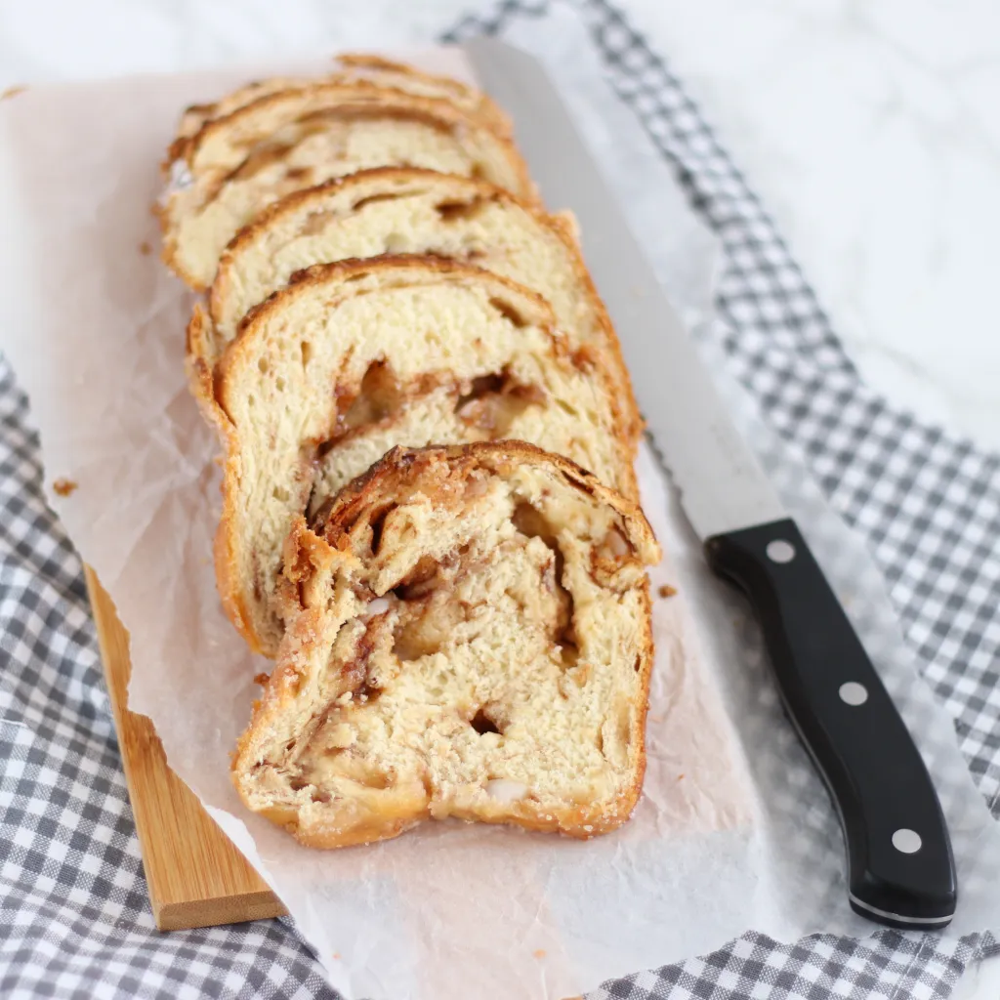

Sûkerbôle

Sûkerbôle, a sweet dense bread filled with sugar and cinnamon.
A lovely treat for breakfast. Usually served with butter. Also great for dessert when prepared like French pain perdu and served with whipped cream.
Ingredients
Dough
- 350g flour
- 150ml milk (at room temperature)
- 30g soft white sugar
- 25g butter (at room temperature)
- 7g instant yeast
- 7g salt
- 3 tablespoons ginger syrup
- 1 egg (beaten)
Filling
- 175g of pearl sugar
- 1 teaspoon cinnamon
- 20g butter (melted)
Other
- sunflower oil
- 25g of pearl sugar
- sugar
- 1 egg (beaten)
- butter (melted)
- bread tin (20cm)
- baking paper
Steps
- Kneed all ingredients for the dough in a kitchen machine for 15 minutes
- Lightly oil a bowl and lightly make a ball out of the dough. Put the dough in the bowl with the top down and flip the dough over, covering all sides with a thin layer of oil
- Cover the bowl with cling film and let the dough rise for 1 hour till its volume has doubled
- Mix all ingredients for the filling. Take the dough and pull it into a rectangle, cover with 1/3 of the filling. Fold the dough in 3 and flatten slightly. Repeat this process twice till you run out of filling. Kneed a bit more to ensure the filling is equally spread through the dough.
- Push out the dough into a rectangle with a width slightly smaller than the width of the bread tin. Roll up the dough
- Oil the baking tin with some butter and apply the baking paper.
- Cover the baking paper with a thick layer of melted butter and cover with a decent amount of sugar. Shake the baking tin to ensure all baking paper is covered in sugar.
- Spread 25g of pearl sugar in the baking tin.
- Cover the form with cling film and leave to rise for 1 hour.
- Preheat the oven at 200 degrees Celcius (top and bottom heat).
- Brush the dough with beaten egg and cover with sugar.
- Place a cup of water in the bottom of the oven and insert the baking tin.
- Bake the bread during 30 minutes till baked through and nicely browned.
- Leave the bread to rest for 5 minutes before removing it from the baking tin and placing it on a wire rack.